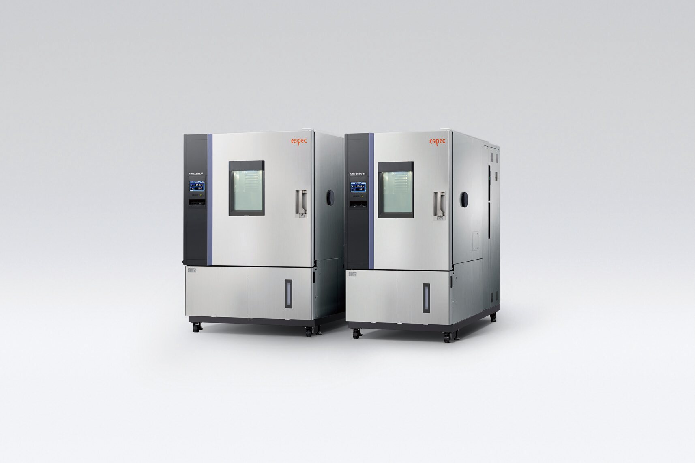

한 장면에 한 대,
ESPEC 시험기 라인업
제이에스 엔지니어링은 1981년부터 ESPEC 환경시험기를 한국에 공급해 온 단독 총대리점입니다.

항온항습기
온도와 습도를 정해진 값으로 붙잡아 둡니다.
- 온도
- -70 ~ +100°C
- 습도
- 20 ~ 98%rh
- ECO형
- 0°C 이하 운전에서 최대 70% 에너지 절감

급속 온도변화 시험기
짧은 시간에 온도를 크게 바꿔 부품의 약점을 찾습니다.
- AR 시리즈 온도
- -70 ~ +180°C
- 온도 변화 속도
- 4 ~ 18K/min
- TCC-151W-20
- 20K/min (JEDEC/IPC 규격용)

열충격 시험기
뜨거운 칸과 차가운 칸 사이를 시험품이 순식간에 오갑니다.
- 고온
- +60 ~ +200°C
- 저온
- -70 ~ 0°C
- 모델
- TSA-73ES / 103ES / 203ES

HAST 시험기
고온·고습에 압력을 더해 제품의 열화를 앞당겨 확인합니다.
- EHS-212 온도
- +105.0 ~ +142.9°C
- 습도
- 75 ~ 100%rh
- 신규 EHS-222M-L
- 내부 φ394 × D626mm (대형 기판용)

워크인 챔버
사람이 들어갈 만한 방 하나를 시험실로 씁니다.
- EBE 항온항습
- -40 ~ +80°C, 10 ~ 95%rh
- AI 서버용 신규 2개 모델
- 발열 부하 30kW, 60kW 대응

어떤 시험이 필요하신가요
시험 조건만 알려 주시면 맞는 장비를 함께 고릅니다.
견적문의